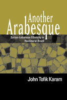

A revealing investigation of changing identity in a globalizing world
A revealing investigation of changing identity in a globalizing world


 A revealing investigation of changing identity in a globalizing world
A revealing investigation of changing identity in a globalizing world

|  |
Another ArabesqueSyrian-Lebanese Ethnicity in Neoliberal BrazilJohn Tofik Karampaper EAN: 978-1-59213-540-0 (ISBN: 1-59213-540-4) |
Winner of the Roberto Reis BRASA Book Award, 2008
Arab American National Museum Book Award in the Adult Non-Fiction Category, 2007
"Another Arabesque is excellent and exciting. It is full of valuable and new materials on Arabs and Arabs in Brazil. It is well documented in the area of theory and innovative in its approach. Karam brings to the study an exciting approach, well written and full of ethnographic insights."
—Barbara Aswad, Wayne State University
Offering a novel approach to the study of ethnicity in the neoliberal market, Another Arabesque is the first full-length book in English to focus on the estimated seven million Arabs in Brazil. With insights gained from interviews and fieldwork, John Tofik Karam examines how Brazilians of Syrian-Lebanese descent have gained greater visibility and prominence as the country has embraced its globalizing economy, particularly its relations with Arab Gulf nations. At the same time, he recounts how Syrian-Lebanese descendents have increasingly self-identified as "Arabs."
Karam demonstrates how Syrian-Lebanese ethnicity in Brazil has intensified through market liberalization, government transparency, and consumer diversification. Utilizing an ethnographic approach, he employs current social and business phenomena as springboards for investigation and discussion. Uncovering how Arabness appears in places far from the Middle East, Another Arabesque makes a new and valuable contribution to the study of how identity is formed and shaped in the modern world.
"This is an ambitious examination of the culture of neoliberalism in Brazil. Both theoretically sophisticated and firmly grounded in meticulous ethnographic research, it will be of interest not only to Brazilianists but to anyone interested in the cultural manifestations of neoliberal economic policy and doctrine, especially as seen in new ethnic configurations."
—Joshua Roth, Mount Holyoke College
"Another Arabesque is a valuable and interesting exploration of the evolution of Brazil�s successful Middle Eastern community in a variety of contexts...The book provides an intriguing insight into the formerly concealed extent to which Arab culture has influenced this Latin American powerhouse."
—The Latin Review of Books
"[Karam] describes in detail how Arab identity has intensified under liberalization...This exhaustive ethnography approaches Arab Brazilian lives as an interconnected whole, examining not only business but also politics, marriage and interpersonal relationships, leisure and tourism."
—NACLA Report on the Americas
"Karam�s concise, well-wrought account of the intensification of Syrian-Lebanese (i.e., Arab) identity is a significant contribution to a burgeoning literature on ethnicity in Brazil�.Drawing on an impressive range of materials, including historical documents, newspaper reports, ethnographic vignettes, interviews, and soap operas, he provides a rich account of the trajectory of a Brazilian ethnic category. While the book offers intriguing sketches rather than in-depth explorations of individuals, it compensates by thinking big, historically, and geographically."
—The Luso-Brazilian Review
�By approaching his investigation from an anthropological perspective, Karam contributes to understanding the Syrian-Lebanese phenomenon through time in Brazil�.The book contributes to the study of the relationship between ethnic identity and nation construction by asking questions that go beyond the explanations derived from colonial logic�.the book provides an ethnographic perspective that proposes new forms of observation and data collection that are very relevant to social studies. As such, it will stand as one of the most useful in the field.�
—Latin American Politics and Society
"This is an engaging and theoretically provocative ethnography that focuses on an ethnic community that has not received much attention from anthropologists studying Brazil.... Another Arabesque [makes] an important contribution to understanding ethnicity, nationalism, and globalization in Brazil and elsewhere."
—The Journal of Latin American and Caribbean Anthropology
"Karam succeeds in building an accurate and sensitive ethnography that captures nuances and stimulating insights into the understanding of Syrian and Lebanese ethnicity in Brazil today."
—The Journal of Latin American Studies
"Another Arabesque is an impressive contribution to the field of ethnic studies in the Americas. Theoretically nuanced, this engaging ethnography is nonetheless accessible to the general reader.... Karam elucidates the interconnections between nationalist ideology, market demands and ethnic identity.... Another Arabesque rewards its readers on many levels. Not only does it provide much insight into the construction of Syrian-Lebanese ethnicity in Brazil and its relationship to neoliberal state policies, it also offers new ways of looking at the construction of Arab ethnic identity in the United States."
—Al Jadid: A Review and Record of Arab Culture and Arts
Also available in e-book
Acknowledgments
Introduction: The Politics of Privilege
Part I: Imagining Political-Economy
1. Pariahs to Partners in the Export Nation
2. Eth(n)ics and Transparent State Reform
Part II: Remodeling the Nationalist Order
3. Turcos in the Market Model of Racial Democracy
4. Mixing Christians, Cloning Muslims
Part III: Marketing Ethnic Culture
5. Ethnic Re-Appropriation in the Country Club Circuit
6. Air Turbulence in Homeland Tourism
Conclusion: In Secure Futures: Arabness, Neoliberalism, and Brazil
Endnotes
Bibliography
 | John Tofik Karam is Assistant Professor in the Latin American and Latino Studies Program at DePaul University. |
Race and Ethnicity
Latin American/Caribbean Studies
Sociology
© 2015 Temple University. All Rights Reserved. This page: http://www.temple.edu/tempress/titles/1868_reg.html.